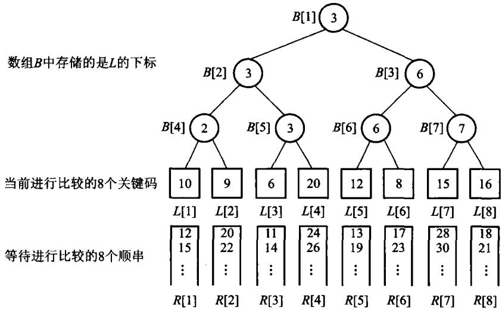
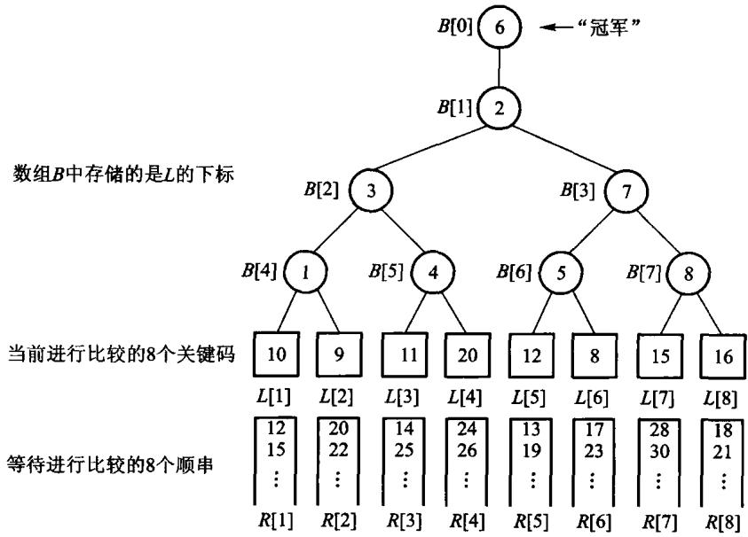

当数据大到内存装不下时，排序的瓶颈变成磁盘读写。外部排序先生成有序顺串，再进行多路归并。置换选择用最小堆尽可能延长当前顺串；竞赛树维护多路输入中当前最小的选手。
#9.1 主存储器和外存储器
前面各章的结构基本上都在内存里，也叫内部数据结构。内存容量有限，程序一结束数据也就没了。大规模数据必须放到外存上，排序过程也就变成多次内存与外存之间的交换。
主存（RAM、cache、显存）在主板上，按单元连续编址，CPU 直接访问，一次存取时间可以看成很小的常数，单位是纳秒。它快、贵、容量相对小，断电就丢。外存（硬盘、磁带、U 盘）便宜、容量大，信息断电不丢，有的还能随身带走。但一次存取以毫秒甚至秒计，比内存慢几个数量级。
外存慢，一个原因是每次访问都要先定位再读写。磁盘要把磁头移到目标磁道，再等扇区转到磁头下，定位往往就要几毫秒到几十毫秒，远慢于真正把数据读出来。所以外存按固定大小的页块存取：一次定位读写一整页，减少定位次数。顺序扫描时再配合缓冲：一次读入一页或几页到内存，后面的访问尽量打在缓冲区里。
对外排序来说，目标首先是减少读写次数，而不是减少内存里的比较。一次磁盘 I/O 往往比一次比较贵几个数量级。
#先建立成本模型
分析外排序时，不能再只数比较次数。设文件有 N 个记录，每页可放 B 个记录，顺序扫描一遍至少要读 ⌈N/B⌉ 页。若这一遍还要把结果写回外存，I/O 量就是大约 2⌈N/B⌉ 页；内存中多做几次比较，通常远比多一次整文件读写便宜。
| 层次 | 访问单位 | 本章关心的性质 |
|---|---|---|
| CPU cache / 主存 | 字或 cache line | 可随机访问，比较和交换在这里完成 |
| SSD / 磁盘 | 页块 | 定位与传输有固定成本，应顺序、批量读写 |
| 磁带等顺序介质 | 连续块 | 随机定位尤其昂贵，归并比原地交换合适 |
例如 1 亿条 16 字节记录约占 1.6 GB。若内存工作区只有 64 MB，任何“把全部记录放进数组再排序”的内部排序都不成立；外排序必须让大部分记录始终留在外存，只在内存里保存少量缓冲页和当前候选。

图9.1把输入缓冲、内存工作区和输出缓冲分开。输入缓冲空了才整页补入，输出缓冲满了才整页写回；工作区处理的是记录，真正与设备交换的是页。
#9.2 文件的组织和管理
文件是外存上的数据结构，由大量性质相同的记录组成。记录是有独立逻辑意义的一块数据，简单可以是一串字符，复杂则由若干字段组成。操作系统文件常常是连续字符流，结构不明显；数据库文件是有结构的记录集合，每条记录由若干不可再分的数据项组成。学生登记表——姓名、学号、性别、出生年月——就是后一种。
按记录长度，文件分定长和不定长：定长更好处理。按关键码个数，分单关键码和多关键码：多关键码文件除了主码还可以有若干次码。操作通常以记录为单位：顺序读、追加、按条件修改或删除。处理方式有实时（要求很快应答）和批量（允许较长反馈）。
用户看见的是逻辑文件：顺序定长、顺序变长、或按关键码存取。系统实现的是物理文件，常见几种：
- 顺序文件：记录按逻辑次序放进连续物理块，物理顺序与逻辑顺序一致。顺序扫描很快，按关键码插入、删除要搬很多块。
- 索引文件：主文件之外另造索引，先查索引再读记录。第 11 章专门讨论。
- 散列文件：用散列函数把关键码映射到桶或块。第 10 章的闭散列思想可以搬到外存，但冲突处理要按块设计。
本章不实现页缓存和文件句柄，只抽出外排序里两件与文件组织无关、却决定 I/O 次数的事：如何生成更长的初始顺串，以及如何在 k 路归并里选出当前最小。
#记录怎样装进页
定长记录最容易计算：页大小为 P 字节、记录长 R 字节时，一页最多装 ⌊P/R⌋ 条，剩余空间是内部碎片。不定长记录通常在页尾保存槽目录，槽里记录每条记录的偏移和长度；记录在页内移动时，外部引用仍可通过“页号 + 槽号”找到它。
删除记录也有两种代价模型。立即压紧能保持扫描紧凑，却可能搬动大量记录；留下墓碑写入便宜，但查询必须跳过空洞，积累到一定程度仍要重组。第 10 章闭散列里的墓碑解决的是同一种矛盾，只是这里的搬动单位从数组槽变成了页块。
把逻辑顺序与物理位置分开，是后面索引章节的入口：索引保存“关键码到页/槽”的映射，主文件不必为了每次插入都整体移动。外排序则反过来，趁批处理窗口一次性重写主文件，用顺序 I/O 换取之后更快的扫描。
#9.3 外排序
外排序分成两个阶段：
- 顺串生成：把输入切成若干内部有序的段；
- 归并：反复合并这些段，直到只剩一条覆盖全文件的顺串。
若内存能放 M 条记录，普通分批排序只能产生长度至多 M 的初始顺串，顺串数约为 r=⌈N/M⌉。做 k 路归并需要 ⌈logkr⌉ 趟；每一趟都要读完整文件再写完整文件，所以减少一趟，省下的是约 2N/B 次页 I/O，而不是几个比较。
#9.3.1 置换选择排序
顺串是磁盘上已经有序的一段记录。内存一次只能装 M 条时，朴素做法是每批排成一条长为 M 的顺串。置换选择可以做得更好：输出堆顶之后，若下一条记录不小于刚输出的值，它还可以进入当前顺串；否则冻结到下一趟。平均情况下第一趟长度约为 2M。
原书图 9.2 的输入是 50 49 35 45 30 25 15 60 16 27 1，工作区 M = 7。前 7 个建成最小堆后，堆顶是 15。接着读到 60——它比 15 大，可以进当前堆；再读到 16、27、1，它们都比当时的输出值小，被冻结。第一顺串因此是
15 25 30 35 45 49 50 60长度 8，已经超过 M。剩下的 1 16 27 构成第二顺串。
下面把图 9.2 的过程逐步摊开。活跃堆只容纳仍可能进入当前顺串的记录；冻结中的记录必须等下一条顺串。表中“输出后读入”表示先弹出最小值，再从输入缓冲补一条：
| 步 | 输出 | 输出后读入 | 去向 | 当前顺串 | 冻结 |
|---|---|---|---|---|---|
| 初始 | - | 前 7 条 | 建堆 | - | - |
| 1 | 15 | 60 | 60≥15，活跃 | 15 | - |
| 2 | 25 | 16 | 16<25，冻结 | 15 25 | 16 |
| 3 | 30 | 27 | 27<30，冻结 | 15 25 30 | 16 27 |
| 4 | 35 | 1 | 1<35，冻结 | 15 25 30 35 | 16 27 1 |
| 5–8 | 45,49,50,60 | 输入耗尽 | 排空活跃堆 | 15 25 30 35 45 49 50 60 | 16 27 1 |
| 新顺串 | 1,16,27 | - | 冻结区重新建堆 | 1 16 27 | - |
这个表给出两个守门不变量：每条顺串内部非递减；全部顺串拼在一起包含输入的每条记录且恰好一次。第一条保证归并可以工作，第二条防止冻结时丢记录或重复输出。
输入次序决定顺串长度。单调递增输入会一直补进活跃堆，得到一条长顺串；单调递减输入几乎每次都冻结，顺串接近长度 M。随机排列在常见独立分布假设下平均约为 2M，但这是平均结论，不是最坏保证。
图9.1 置换选择：工作区是最小堆。弹出堆顶后，下一条记录若不小于刚输出的值就入堆，否则冻结到下一趟。
若把整份输入推进一个堆再依次弹出，得到的是一条完全有序序列——那是堆排序，不是置换选择。旧实现曾经这样做，测试只断言 {3,1,2} → {1,2,3}，堆排序也能过。现在的接口返回若干顺串，并用原书这组数据守门。
多路归并时，每次要在 k 路的队首里选出最小者。赢者树的内部结点保存胜者下标；败者树的内部结点保存败者，另用一个冠军槽记录全局最小。替换一名选手后，两者都只需沿叶到根重赛。
先跑一遍：
#include "modern.hpp"
#include <iostream>
int main() {
const std::vector<int> input{50, 49, 35, 45, 30, 25, 15, 60, 16, 27, 1};
const auto runs = dsa::external_sort::replacement_selection(input, 7);
std::cout << "工作区 M=7，得到 " << runs.size() << " 个顺串\n";
for (std::size_t index = 0; index < runs.size(); ++index) {
std::cout << "顺串 " << index + 1 << "（长度 " << runs[index].size() << "）:";
for (int value : runs[index]) {
std::cout << ' ' << value;
}
std::cout << '\n';
}
dsa::external_sort::LoserTree tree({20, 6, 8, 9, 11});
std::cout << "败者树当前冠军: " << *tree.winner() << '\n';
tree.replace(1, 15);
std::cout << "替换后冠军: " << *tree.winner() << '\n';
}c++ -std=c++17 -Wall -Wextra -Werror -Icode/ch09/external_sort \
code/ch09/external_sort/demo.cpp -o /tmp/extsort-demo
/tmp/extsort-demo工作区 M=7，得到 2 个顺串
顺串 1（长度 8）: 15 25 30 35 45 49 50 60
顺串 2（长度 3）: 1 16 27
败者树当前冠军: 6
替换后冠军: 8把 M 改成 11（装得下全部输入），会只得到一个顺串，内容是整表有序——这时置换选择退化为堆排序，正是「内存够用」的边界。
replacement_selection(input, memory) 先读入至多 memory 条建成最小堆。循环中弹出堆顶写入当前顺串；若还有输入，按「incoming >= emitted 则入堆，否则冻结」分流。当前堆空了，就把冻结区建成新堆，开始下一趟。
// 算法9.1：置换选择。memory 是内存工作区能容纳的记录数 M。
// 返回若干顺串：每个顺串内部有序，第一趟的平均长度约为 2M，而不是 M。
// 不属于当前顺串的新记录被冻结，等当前堆耗尽后再建下一趟。
inline std::vector<std::vector<int>> replacement_selection(const std::vector<int>& input,
std::size_t memory) {
if (memory == 0) {
throw std::invalid_argument("replacement selection memory must be positive");
}
if (input.empty()) {
return {};
}
std::size_t next = 0;
std::vector<int> heap;
heap.reserve(memory);
while (next < input.size() && heap.size() < memory) {
heap.push_back(input[next++]);
}
detail::heap_from(heap);
std::vector<std::vector<int>> runs;
std::vector<int> current_run;
std::vector<int> frozen;
while (!heap.empty() || next < input.size() || !frozen.empty()) {
if (heap.empty()) {
if (!current_run.empty()) {
runs.push_back(std::move(current_run));
current_run = {};
}
heap = std::move(frozen);
frozen = {};
while (next < input.size() && heap.size() < memory) {
heap.push_back(input[next++]);
}
detail::heap_from(heap);
if (heap.empty()) {
break;
}
}
const int emitted = detail::heap_pop(heap);
current_run.push_back(emitted);
if (next == input.size()) {
continue;
}
const int incoming = input[next++];
if (incoming >= emitted) {
detail::heap_push(heap, incoming);
} else {
frozen.push_back(incoming);
}
}
if (!current_run.empty()) {
runs.push_back(std::move(current_run));
}
return runs;
}def replacement_selection(values: list[int], memory: int) -> list[list[int]]:
if memory <= 0:
raise ValueError("replacement selection memory must be positive")
if not values:
return []
heap = list(values[:memory])
_heapify(heap)
next_index = memory
runs: list[list[int]] = []
current: list[int] = []
frozen: list[int] = []
while heap or next_index < len(values) or frozen:
if not heap:
if current:
runs.append(current)
current = []
heap = frozen
frozen = []
_heapify(heap)
emitted = _heap_pop(heap)
current.append(emitted)
if next_index < len(values):
incoming = values[next_index]
next_index += 1
if incoming >= emitted:
_heap_push(heap, incoming)
else:
frozen.append(incoming)
if current:
runs.append(current)
return runs#9.3.2 二路外排序
对 m 个顺串两两归并，趟数是 ⌈log2m⌉。置换选择把初始顺串变长，就是为了减小 m。
归并两条顺串至少需要三个缓冲页：两页分别保存两路尚未消费的记录，一页收集输出。比较两个输入缓冲的队首，把较小者移入输出缓冲；某个输入页耗尽就读该顺串下一页，输出页满则整页写回。这样每个输入页恰好读一次，每个输出页恰好写一次。

原书图 9.3 的例子有 3000 条记录，初始得到 10 条、每条 300 条的顺串：
| 趟次 | 输入顺串数 | 合并方式 | 输出顺串数 | 每条典型长度 |
|---|---|---|---|---|
| 0 | 10 | 初始顺串 | 10 | 300 |
| 1 | 10 | 两两归并 | 5 | 600 |
| 2 | 5 | 两对归并，1 条轮空 | 3 | 1200,1200,600 |
| 3 | 3 | 一对归并，1 条轮空 | 2 | 2400,600 |
| 4 | 2 | 最后归并 | 1 | 3000 |
因此确实需要 ⌈log210⌉=4 趟。若每趟都另写一个文件，归并阶段传输约 4×2N=8N 条记录。置换选择若把初始顺串数从 10 降到 5，就只需 3 趟，直接省掉一次完整读写。
“增加归并路数总会更快”也不成立。k 越大，趟数越少，但至少要为每一路留一个输入缓冲，还要有输出缓冲；内存固定时，每路缓冲变小，补页更频繁。选择 k 是“少趟数”和“每路有足够缓冲”之间的折中。
#9.3.3 多路归并——选择树
赢者树用完全二叉数组：叶存放选手下标，内部结点写 better(左, 右)。败者树在内部结点写败者，另用 champion_ 记全局胜者。替换后只沿叶到根重赛。

每个“选手”代表一条顺串的当前记录。直接扫描 k 个队首，每输出一条记录要比较 k−1 次；选择树第一次建树同样要 k−1 次比较，但之后只替换获胜顺串的队首，沿高度 ⌈log2k⌉ 的路径重赛。输出 N 条记录时，选择代价由 O(Nk) 降为 O(N log k)。
以当前值 [20, 6, 8, 9, 11] 为例，第一轮比赛的冠军是下标 1、值 6。输出 6 后，该路补入 15，只需重算“选手 1 到根”的比赛；8 成为新冠军。其余三路的内部比较结果没有变化，不应整棵树重建。


赢者树的父结点记胜者，所以更新时要找到沿途的对手；败者树把沿途败者直接留在父结点，新选手一路与这些败者比较即可。两者渐近复杂度相同，区别在重赛时保存了什么信息。相同关键码还要规定稳定的决胜规则；本书实现让下标较小的路获胜，测试用两个值为 1 的选手固定这条规则。
#四路归并手工演算
设四条输入顺串为：
R0: 2 12 20
R1: 4 9 25
R2: 1 11 18
R3: 6 8 30初始选手是各路队首 [2,4,1,6]。冠军来自 R2；输出 1 后，只有 R2 前进到 11，选手变成 [2,4,11,6]。之后每一步都只替换刚获胜的那一路：
| 输出步 | 比赛中的 4 个当前值 | 冠军路 | 输出 | 该路补入 |
|---|---|---|---|---|
| 1 | 2,4,1,6 | R2 | 1 | 11 |
| 2 | 2,4,11,6 | R0 | 2 | 12 |
| 3 | 12,4,11,6 | R1 | 4 | 9 |
| 4 | 12,9,11,6 | R3 | 6 | 8 |
| 5 | 12,9,11,8 | R3 | 8 | 30 |
| 6 | 12,9,11,30 | R1 | 9 | 25 |
| 7 | 12,25,11,30 | R2 | 11 | 18 |
| 8 | 12,25,18,30 | R0 | 12 | 20 |
| 9 | 20,25,18,30 | R2 | 18 | 耗尽 |
| 10 | 20,25,+∞,30 | R0 | 20 | 耗尽 |
| 11 | +∞,25,+∞,30 | R1 | 25 | 耗尽 |
| 12 | +∞,+∞,+∞,30 | R3 | 30 | 耗尽 |
最终得到 1 2 4 6 8 9 11 12 18 20 25 30。某一路耗尽后，用“正无穷”参加余下比赛，它就不会再次获胜。工程实现不一定真的存 INT_MAX：若关键码本身允许取最大整数，哨兵会与合法数据冲突；更稳妥的做法是额外保存“该路是否耗尽”的状态。

图9.7中内部结点保存败者，冠军另放在根外的槽位。替换冠军之后，新值只与路径上留下的败者依次比较。

#稳定性和重复关键码
外排序处理的通常是完整记录，关键码相等不代表记录相同。若要求稳定排序，比较器必须把“原始先后次序”作为第二关键码：同一顺串内先出现的先输出；不同顺串之间，可用初始顺串号和顺串内位置决胜。只比较整数值虽然仍能得到非递减关键码，却可能打乱同关键码记录的先后。
本章 WinnerTree 和 LoserTree 在值相等时让下标较小的选手获胜，这保证比赛结果可重复，但它只等价于“路号优先”，并不自动等价于全文件稳定。若初始顺串本身由稳定排序生成，还要证明路号顺序与原始文件顺序一致；否则应把原始序号随记录一起参与比较。
#三个常见错误
- 把所有输入一次放进堆。 这要求内存容纳整个文件，已经退回内部堆排序。
- 冻结后仍与当前堆比赛。 小于刚输出值的记录会让当前顺串倒序，破坏归并前提。
- 一路耗尽就停止。 正确做法是让该路退出比赛，继续归并其余顺串，直到所有路都耗尽。
检查外排序程序不能只看“最后输出是否有序”。还要分别检查记录守恒、每条初始顺串有序、内存工作区不超过 M、耗尽一路后仍能继续，以及相等关键码的决胜规则。否则一个偷偷做整表排序的实现也会交出正确终值，却完全没有实现外排序。
// 代码9.2：赢者树。内部结点保存两名选手比较后的胜者下标，根是全局最小。
class WinnerTree {
public:
explicit WinnerTree(std::vector<int> players) : players_(std::move(players)) {
if (players_.empty()) {
return;
}
leaf_base_ = detail::TournamentOps::next_power_of_two(players_.size());
tree_.assign(leaf_base_ * 2, detail::TournamentOps::no_player);
for (std::size_t index = 0; index < players_.size(); ++index) {
tree_[leaf_base_ + index] = index;
}
for (std::size_t node = leaf_base_ - 1; node > 0; --node) {
tree_[node] = detail::TournamentOps::better(players_, tree_[node * 2],
tree_[node * 2 + 1]);
}
}
[[nodiscard]] std::optional<std::size_t> winner_index() const {
if (players_.empty() || tree_[1] == detail::TournamentOps::no_player) {
return std::nullopt;
}
return tree_[1];
}
[[nodiscard]] std::optional<int> winner() const {
const auto index = winner_index();
return index ? std::optional<int>(players_[*index]) : std::nullopt;
}
void replace(std::size_t player, int value) {
if (player >= players_.size()) {
throw std::out_of_range("tournament player");
}
players_[player] = value;
std::size_t node = leaf_base_ + player;
tree_[node] = player;
while (node > 1) {
node /= 2;
tree_[node] = detail::TournamentOps::better(players_, tree_[node * 2],
tree_[node * 2 + 1]);
}
}
private:
std::vector<int> players_;
std::vector<std::size_t> tree_;
std::size_t leaf_base_{0};
};class WinnerTree(_Tournament):
"""代码9.2：根保存全局最小选手。"""// 代码9.3：败者树。内部结点保存败者下标，另用 champion_ 记录全局胜者。
// 替换一名选手时只需沿叶到根重赛，不必访问兄弟子树的内部结构。
class LoserTree {
public:
explicit LoserTree(std::vector<int> players) : players_(std::move(players)) {
if (players_.empty()) {
return;
}
leaf_base_ = detail::TournamentOps::next_power_of_two(players_.size());
loser_.assign(leaf_base_, detail::TournamentOps::no_player);
subtree_winner_.assign(leaf_base_ * 2, detail::TournamentOps::no_player);
for (std::size_t index = 0; index < players_.size(); ++index) {
subtree_winner_[leaf_base_ + index] = index;
}
for (std::size_t node = leaf_base_ - 1; node > 0; --node) {
replay_node(node);
}
champion_ = subtree_winner_[1];
}
[[nodiscard]] std::optional<std::size_t> winner_index() const {
if (players_.empty() || champion_ == detail::TournamentOps::no_player) {
return std::nullopt;
}
return champion_;
}
[[nodiscard]] std::optional<int> winner() const {
const auto index = winner_index();
return index ? std::optional<int>(players_[*index]) : std::nullopt;
}
[[nodiscard]] std::optional<std::size_t> loser_at(std::size_t node) const {
if (node == 0 || node >= loser_.size() ||
loser_[node] == detail::TournamentOps::no_player) {
return std::nullopt;
}
return loser_[node];
}
void replace(std::size_t player, int value) {
if (player >= players_.size()) {
throw std::out_of_range("tournament player");
}
players_[player] = value;
subtree_winner_[leaf_base_ + player] = player;
for (std::size_t node = (leaf_base_ + player) / 2; node > 0; node /= 2) {
replay_node(node);
}
champion_ = subtree_winner_[1];
}
private:
void replay_node(std::size_t node) {
const std::size_t left = subtree_winner_[node * 2];
const std::size_t right = subtree_winner_[node * 2 + 1];
loser_[node] = detail::TournamentOps::worse(players_, left, right);
subtree_winner_[node] = detail::TournamentOps::better(players_, left, right);
}
std::vector<int> players_;
std::vector<std::size_t> loser_;
std::vector<std::size_t> subtree_winner_;
std::size_t leaf_base_{0};
std::size_t champion_{detail::TournamentOps::no_player};
};class LoserTree(_Tournament):
"""代码9.3：重赛后仍能报告全局胜者。"""
def loser_at(self, node: int) -> int | None:
if node <= 0 or node >= len(self.players):
return None
winner = self.winner_index()
candidates = [index for index in range(len(self.players)) if index != winner]
return max(candidates, key=self.players.__getitem__) if candidates else None#本章小结
外存按页存取，一次定位比一次比较贵几个数量级，所以外排序首先要减少读写次数。文件是外存上的记录集合，逻辑组织与物理组织（顺序、索引、散列）要分开看。外排序先生成初始顺串再多路归并。置换选择用堆把不属于当前顺串的记录冻结，第一趟平均长度约 2M，而不是 M。k 路归并用赢者树或败者树在 O(log k) 时间内选出当前最小。
#习题
#补充外排序题（参考课程第 9 章）
- 给定内存容量
M的最小堆，模拟置换选择生成全部顺串，并标出每次冻结的记录。 - 给定页大小、记录大小和内存缓冲页数，计算一次归并的最大路数、顺串长度和访外次数。
- 比较 winner tree、loser tree 与最小堆在多路归并中的更新代价。
- 说明为什么外存要按页读写，以及缓冲如何减少定位次数。
- 对输入
50 49 35 45 30 25 15 60 16 27 1、M=7，写出置换选择的两个顺串，并指出哪些键被冻结。 - 若 M 大到能装下全部输入，置换选择退化成什么。
- 赢者树和败者树的内部结点各记什么？替换一名选手后为什么只需沿叶到根重赛。
- m 个顺串做二路归并要多少趟？置换选择怎样减少 m。
#上机题
- 实现置换选择，用原书图 9.2 的输入做守门测试。
- 实现赢者树，随机替换选手并与每次扫描 k 路的朴素选最小对拍。
- 模拟 k 路归并：输入是若干已排序向量，用败者树输出完整有序序列。
- 比较 M=4,8,16 时置换选择产生的顺串个数。